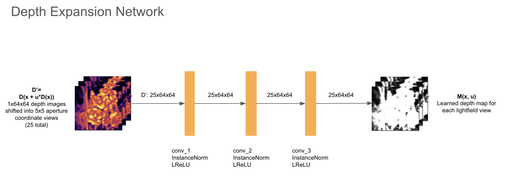

**A Survey of Aperture Rendering with GANs and NeRF**
Emma Liu (emmaliu), Jason Xu (jiachenx), Joyce Zhang (yunyizha)
(#) Overview
(#) CycleGAN
(#) NeRF
(#) ARGAN
(##) Theory
(###) DoF Mixture Learning
(###) Center Focus Prior
(##) Model Architecture
(###) Generators

(###) Discriminator
[1] Kaneko, Takuhiro. "Unsupervised Learning of Depth and Depth-of-Field Effect from Natural Images with Aperture Rendering Generative Adversarial Networks."" 2021 IEEE/CVF Conference on Computer Vision and Pattern Recognition (CVPR) (2021): 15674-15683.
[2] Thu Nguyen-Phuoc, Chuan Li, Lucas Theis, Christian Richardt, and Yong-Liang Yang. HoloGAN: Unsupervised learning of 3D representations from natural images. In ICCV, 2019.
[3] Jun-Yan Zhu, Taesung Park, Phillip Isola, and Alexei A.Efros. Unpaired image-to-image translation using cycle�consistent adversarial networks. In ICCV, 2017
I used the [15-668: Physics-Based Rendering](http://graphics.cs.cmu.edu/courses/15-468/) report template. For an overview of Markdeep and its syntax, see the [official demo document](https://casual-effects.com/markdeep/features.md.html) and
the associated [source code](https://casual-effects.com/markdeep/features.md.html?noformat).